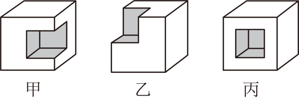
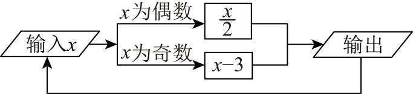
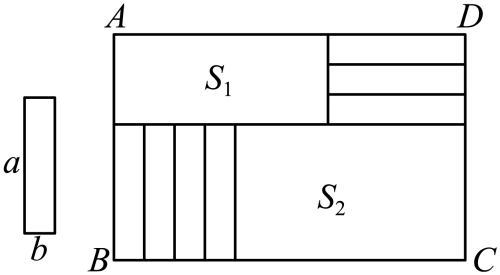
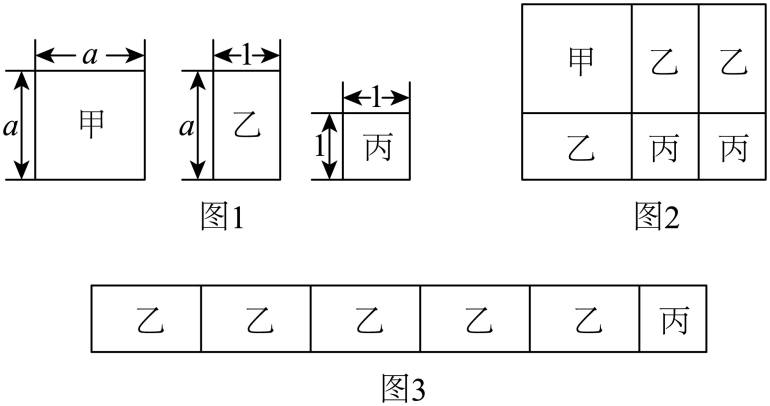

第三章 整式及其加减·拔尖卷
【北师大版2024】
考试时间：120分钟 满分：120分
姓名：___________班级：___________考号：___________
考卷信息：
本卷试题共24题，单选10题，填空6题，解答8题，满分120分，限时120分钟，本卷题型针对性较高，覆盖面广，选题有深度，可衡量学生掌握本章内容的具体情况！
第Ⅰ卷
一．选择题（共10小题，满分30分，每小题3分）
1．（3分）（2025·河北沧州·一模）要使3a2−2a−的化简结果为单项式，则括号内的整式可以是（ ）
A．a2 B．−2a C．−3a2 D．−6a
2．（3分）（24-25七年级上·广东广州·期中）已知m为有理数，若多项式4x2ym−1−y2+m是三次三项式，则该多项式的常数项为（ ）
A．0或2 B．±2 C．±1 D．0
3．（3分）式子3x2−54，−a，7，2x，a2+2，x2y2−2x2+3中整式有（ ）
A．3个 B．4个 C．5个 D．6个
4．（3分）已知−5a2mb和8a6b3−n是同类项，则下列各组中的单项式是同类项的是（ ）
A．−xmy2与12x2yn B．2xm−1y2与0.01x2yn
C．x3y4与−4xm+1yn+2 D．−x2my4与6x6yn+1
5．（3分）（2025·云南玉溪·一模）一列单项式按以下规律排列：x，−3x2，5x3，−7x4，9x5，−11x6，13x7，…，则第2025个单项式是（ ）
A．4049x2025 B．−4049x2025 C．4047x2025 D．−4047x2025
6．（3分）（24-25七年级下·河南郑州·期末）一个圆柱的高为5cm，底面半径为2cm2cm，如果它的高不变，底面半径增加acm，若π取3，那么它的体积增加（ ）
A．9a2+32acm3 B．9a2−4acm3
C．15a2+60acm3 D．12a2+48acm3
7．（3分）（24-25七年级上·广东广州·期末）已知A=2x2+3xy−2x,B=x2+xy+y，且A−2B的值与x的取值无关．若B=5，则A的值是（ ）
A．2 B．3 C．10 D．6
8．（3分）（24-25七年级上·湖北武汉·期末）已知a，b，c，d为常数，P=ax2+by+x，Q=6x2+3y+cx，若3P+Q的取值与x无关，P−2Q是不含y的多项式，且bx−a+dx−c=5恒成立，则ad+bc的值为（ ）
A．−6 B．0 C．6 D．5
9．（3分）（24-25七年级上·安徽阜阳·期中）如图，佳佳玩一个摸球计算游戏，在一个密闭的容器中放入五个小球，小球分别标有如图所示的代数式，现从容器中摸取小球，规定：若摸到白色球，就加上球上的式子；若摸到灰色球，就减去球上的式子．佳佳摸出全部小球后的计算结果是（ ）
A．−3a2b+2 B．−2a2b−4 C．2 D．−2
10．（3分）（24-25七年级上·湖南常德·期末）某玩具厂在生产配件时，需要分别从棱长为a的正方体木块中，挖去一个棱长为b（b<a）的小正方体木块，得到甲、乙、丙三种型号的玩具配件（如图所示），将甲、乙、丙这三种配件的表面积分别记为S甲、S乙、S丙，则下列大小关系正确的是（ ）

A．S甲>S乙>S丙 B．S甲>S丙>S乙
C．S丙>S乙>S甲 D．S丙>S甲>S乙
二．填空题（共6小题，满分18分，每小题3分）
11．（3分）（24-25七年级上·河南信阳·期末）写出一个单项式，使它与多项式3a2b−2ab2的和为单项式： ．
12．（3分）（24-25七年级下·四川成都·期末）如图所示，在这个运算程序中，若开始输入x的值为2，结果输出的是1，将第1次输出的结果1，再次输入运算程序，进行第2次运算，结果输出的是−2，……则第6次输出的结果是 ；第2025次输出的结果是 ．

13．（3分）（24-25七年级上·江苏宿迁·期中）已知a，b为常数，且三个单项式xy3，axyb，−2xy的和仍然是单项式，则a+b= ．
14．（3分）（24-25七年级上·福建福州·期末）已知多项式A=2a2−4a+6,B=3a2−4a+8,a为整数，这两个多项式在数轴上表示的点分别为M、N，若M、N两点之间（不包含点M,N）恰好有10个“整数点”（点表示的数为整数），则a的值为 ．
15．（3分）（24-25七年级上·上海·期中）我们约定：上方相邻两数之和等于这两数下方箭头共同指向的数，例如：在图1中，即5+6=11，若a,b满足|a−3|+(b+1)2=0，则图2中y的值为 ．

16．（3分）（24-25七年级下·浙江金华·期中）如图，小长方形纸片的长为a，宽为b，且a>b，将7张纸片按图示不重叠的放在长方形ABCD内，未被覆盖的部分恰好被分割为两个长方形，面积分别为S1和S2．

（1）当a=8，b=2，AD=20时，S2−S1的值为 ；
（2）若AB长度保持不变，AD变长，将这7张小长方形纸片还按照同样的方式放在新的长方形ABCD内，当3S2−5S1的值与AD的长度无关时，a、b满足的关系式是 ．
第Ⅱ卷
三．解答题（共8小题，满分72分）
17．（6分）（24-25七年级上·天津·期中）已知多项式−3x2ym+1+x3y−3x4−1是五次四项式，且单项式3x2ny3−m与该多项式的次数相同．
(1)求m,n的值；
(2)当x=−1,y=1时，求该多项式的值．
18．（6分）（24-25九年级下·河北衡水·阶段练习）数学课上，老师在黑板上书写了M，N两个整式：
M=−2a2+4a；
N=−2a2−2a+2．
(1)比较M，N的大小；
(2)若P+2N=M−6，证明：P不可能小于0．
19．（8分）（24-25七年级上·安徽合肥·期中）已知：代数式A=3x2−x+1，小马虎同学在做整式加减运算时，误将“A−B”看成“A+B”了，计算结果是2x2−3x−2．
(1)请你帮小马虎算出正确的A−B的化简结果（结果按x的降幂排列）；
(2)若关于x的代数式C=2mx2+4−nx+1与B的和是一个单项式，求m−n的值．
20．（8分）（2025·广东·一模）【阅读理解】已知F=k+3x+1，若F的值和x的取值无关，则k+3=0，k=−3．所以当k=−3时，F=k+3x+1和x的取值无关．
【知识应用】已知M=mx2−3x+7，N=2x2+nx−2．
(1)用含m，n，x的式子表示M+N；
(2)若M+N的值和x的取值无关，求mn的值．
21．（10分）（24-25七年级下·河北石家庄·期末）现有甲、乙、丙三种规格的卡片各若干张，已知甲卡片是边长为a的正方形，乙卡片是宽为1，长为a的长方形，丙卡片是边长为1的正方形，如图1所示（a>1）．嘉嘉分别用6张卡片拼出了两个长方形（不重叠，无缝隙），如图2和图3，其面积分别为S1,S2．

(1)请用含a的式子分别表示S1=______，S2=______；
(2)当a=3时，分别求S1,S2的值；
(3)比较S1与S2的大小，并说明理由．
22．（10分）（24-25七年级下·广东佛山·期中）综合与实践
学习了综合与实践《设计自己的运算程序》后，乐乐设计了一个探索两位数的“九九归一”运算程序：任意写一个两位数；计算该数十位数字与个位数字之和，用原数减去这个和，得到新数；若新数是两位数，重复上述过程，直到结果为个位数．
(1)若写下的是47，根据乐乐设计的运算程序，写出找到结果的详细过程．
(2)乐乐在运算过程中发现并验证了如下猜想：若一个两位数是9的倍数，且这个数不超过98，则该数的个位数与十位数之和总是等于 ．
(3)根据以上猜想，试结合代数式解释，任意选择一个两位数，该运算程序的结果总是同一个数．
23．（12分）（2025·河北邯郸·二模）【方法】
有一种整式处理器，能将二次多项式处理成一次多项式，处理方法是：将二次多项式的二次项系数与一次项系数的和(和为非零数)作为一次多项式的一次项系数，将二次多项式的常数项作为一次多项式的常数项．例如：A=3x2+2x−8，A经过处理器得到B=3+2x−8=5x−8．
【应用】
若关于x的二次多项式A经过处理器得到B，根据以上方法，解决下列问题：
（1）填空：若A=−2x2+4x−5，B=______，
（2）若A=2x2−5x−1，求关于x的不等式B≥0的解集．
【延伸】
（3）已知M=2x−2m−2x2+m2，M是关于x的二次多项式，若N=kx+4是M经过处理器得到的一次多项式，求k的值．
24．（12分）（24-25七年级上·湖南邵阳·期末）已知fx是关于字母x 的多项式f（x）=a1xn+a2xn−1+…+an−1x2+anx+c（其中a1，a2，…，an是各项的系数，c 是常数项）；我们规定fx的求导多项式是 gx，且gx=na1xn−1+n−1a2xn−2+…+2an−1x+an．如fx=4x3−3x2+5x−8，则它的求导多项式为gx=3×4x2−2×3x+1×5=12x2−6x+5． 请根据上面的材料，完成下列问题：
(1)已知fx=x2， 则它的求导多项式gx=______
(2)已知fx=3x2−27x−1，则它的求导多项式gx=______；若gx=10，求x的值．
(3)已知关于x的二次多项式fx=a−3x2−8x+7，并且它的求导多项式是gx，若关于x的方程gx=−2x有正整数解，求a的整数值．